Pakete laden
Mit dem Paket tidyverse laden wir die gängigen “Datenjudo-Befehle”. Außerdem die Befehle zur Datenvisualisierung (d.h. das Paket ggplot2 wird geladen).
library(tidyverse)
library(broom) # Überführt in Dataframes
library(skimr) # Gibt Überblick über deskriptive Statistiken
library(ggstatsplot) # schickeres Streudiagramm
library(rsample) # for data splitting
library(cowplot) # Um mehrere Diagramme zusammenzufügen
library(corrr) # Korrelationsmatrizen
library(yardstick) # Modellgüte berechnen
library(ggfortify) # Autoplot für Modellannahmen
Denken Sie daran, dass Pakete (einmalig) installiert sein müssen, bevor Sie sie laden können (mittels library()).
Daten laden
Die Daten dieser Fallstudie “wohnen” in diesem Paket:
library(ggplot2movies)
Um die Daten (aus einem geladenen Paket) zu laden, verwenden wir den Befehl data():
data("movies")
Alternativ kann man die Daten auch aus einer Datei einlesen:
movies <- read.csv("https://vincentarelbundock.github.io/Rdatasets/csv/ggplot2movies/movies.csv")
(Tipp: Diese Webseite speichert viele Datensätze.)
Werfen wir einen ersten Blick in die Daten, um zu sehen, dass sie korrekt in R importiert wurden:
glimpse(movies)
#> Rows: 58,788
#> Columns: 25
#> $ X <int> 1, 2, 3, 4, 5, 6, 7, 8, 9, 10, 11, 12, 13, 14, 15, 16, 17…
#> $ title <chr> "$", "$1000 a Touchdown", "$21 a Day Once a Month", "$40,…
#> $ year <int> 1971, 1939, 1941, 1996, 1975, 2000, 2002, 2002, 1987, 191…
#> $ length <int> 121, 71, 7, 70, 71, 91, 93, 25, 97, 61, 99, 96, 10, 10, 1…
#> $ budget <int> NA, NA, NA, NA, NA, NA, NA, NA, NA, NA, NA, NA, NA, NA, N…
#> $ rating <dbl> 6.4, 6.0, 8.2, 8.2, 3.4, 4.3, 5.3, 6.7, 6.6, 6.0, 5.4, 5.…
#> $ votes <int> 348, 20, 5, 6, 17, 45, 200, 24, 18, 51, 23, 53, 44, 11, 1…
#> $ r1 <dbl> 4.5, 0.0, 0.0, 14.5, 24.5, 4.5, 4.5, 4.5, 4.5, 4.5, 4.5, …
#> $ r2 <dbl> 4.5, 14.5, 0.0, 0.0, 4.5, 4.5, 0.0, 4.5, 4.5, 0.0, 0.0, 0…
#> $ r3 <dbl> 4.5, 4.5, 0.0, 0.0, 0.0, 4.5, 4.5, 4.5, 4.5, 4.5, 4.5, 4.…
#> $ r4 <dbl> 4.5, 24.5, 0.0, 0.0, 14.5, 14.5, 4.5, 4.5, 0.0, 4.5, 14.5…
#> $ r5 <dbl> 14.5, 14.5, 0.0, 0.0, 14.5, 14.5, 24.5, 4.5, 0.0, 4.5, 24…
#> $ r6 <dbl> 24.5, 14.5, 24.5, 0.0, 4.5, 14.5, 24.5, 14.5, 0.0, 44.5, …
#> $ r7 <dbl> 24.5, 14.5, 0.0, 0.0, 0.0, 4.5, 14.5, 14.5, 34.5, 14.5, 2…
#> $ r8 <dbl> 14.5, 4.5, 44.5, 0.0, 0.0, 4.5, 4.5, 14.5, 14.5, 4.5, 4.5…
#> $ r9 <dbl> 4.5, 4.5, 24.5, 34.5, 0.0, 14.5, 4.5, 4.5, 4.5, 4.5, 14.5…
#> $ r10 <dbl> 4.5, 14.5, 24.5, 45.5, 24.5, 14.5, 14.5, 14.5, 24.5, 4.5,…
#> $ mpaa <chr> "", "", "", "", "", "", "R", "", "", "", "", "", "", "", …
#> $ Action <int> 0, 0, 0, 0, 0, 0, 1, 0, 0, 0, 0, 0, 0, 0, 1, 1, 0, 0, 1, …
#> $ Animation <int> 0, 0, 1, 0, 0, 0, 0, 0, 0, 0, 0, 0, 0, 0, 0, 0, 0, 0, 0, …
#> $ Comedy <int> 1, 1, 0, 1, 0, 0, 0, 0, 0, 0, 0, 0, 1, 0, 1, 1, 0, 0, 1, …
#> $ Drama <int> 1, 0, 0, 0, 0, 1, 1, 0, 1, 0, 1, 0, 0, 0, 0, 0, 1, 0, 0, …
#> $ Documentary <int> 0, 0, 0, 0, 0, 0, 0, 1, 0, 0, 0, 0, 0, 0, 0, 0, 0, 1, 0, …
#> $ Romance <int> 0, 0, 0, 0, 0, 0, 0, 0, 0, 0, 0, 0, 0, 0, 0, 0, 0, 0, 0, …
#> $ Short <int> 0, 0, 1, 0, 0, 0, 0, 1, 0, 0, 0, 0, 1, 1, 0, 0, 0, 1, 0, …
Sieht alles gut aus.
Alternativ könnten Sie die Daten mit read.csv() einlesen, z.B. von einem Server oder aber von Ihrem Computer.
Die Namen der Variablen sind (wie so oft) nicht selbsterklärung. Werfen wir einen Blick in die Hilfe.
help(movies)
Forschungsfrage
Wie gut kann man die Erfolg eines Filmes vorhersagen? Als Erfolg definieren wir die Höhe der Beurteilung (rating).
Welche Faktoren sind nützlich für die Güte dieser Vorhersage?
Ihre salvatorische Klausel
Es könnte sein, dass Sie in dieser Fallstudie auf Ideen (oder R-Syntax) treffen, die Sie nicht kennen. Lassen Sie sich nicht davon ins Boxhorn jagen. Verarbeiten Sie einfach die Teile, die Sie verstehen. Diese Fallstudie soll kein Lehrtext zu den theoretischen Hintergründen sein; daher habe ich auf Erklärungen und Theorie weitgehend verzichtet. Hier geht es um das praktische Tun. Ich wünsche Ihnen viel Freude und Erkenntnisse!
Überblick über die Kennzahlen
skim(movies)
Table 1: Data summary
| Name |
movies |
| Number of rows |
58788 |
| Number of columns |
25 |
| _______________________ |
|
| Column type frequency: |
|
| character |
2 |
| numeric |
23 |
| ________________________ |
|
| Group variables |
None |
Variable type: character
| title |
0 |
1 |
1 |
121 |
0 |
56007 |
0 |
| mpaa |
0 |
1 |
0 |
5 |
53864 |
5 |
0 |
Variable type: numeric
| X |
0 |
1.00 |
29394.50 |
16970.78 |
1 |
14697.75 |
29394.5 |
44091.25 |
58788.0 |
▇▇▇▇▇ |
| year |
0 |
1.00 |
1976.13 |
23.74 |
1893 |
1958.00 |
1983.0 |
1997.00 |
2005.0 |
▁▁▃▃▇ |
| length |
0 |
1.00 |
82.34 |
44.35 |
1 |
74.00 |
90.0 |
100.00 |
5220.0 |
▇▁▁▁▁ |
| budget |
53573 |
0.09 |
13412513.25 |
23350084.93 |
0 |
250000.00 |
3000000.0 |
15000000.00 |
200000000.0 |
▇▁▁▁▁ |
| rating |
0 |
1.00 |
5.93 |
1.55 |
1 |
5.00 |
6.1 |
7.00 |
10.0 |
▁▃▇▆▁ |
| votes |
0 |
1.00 |
632.13 |
3829.62 |
5 |
11.00 |
30.0 |
112.00 |
157608.0 |
▇▁▁▁▁ |
| r1 |
0 |
1.00 |
7.01 |
10.94 |
0 |
0.00 |
4.5 |
4.50 |
100.0 |
▇▁▁▁▁ |
| r2 |
0 |
1.00 |
4.02 |
5.96 |
0 |
0.00 |
4.5 |
4.50 |
84.5 |
▇▁▁▁▁ |
| r3 |
0 |
1.00 |
4.72 |
6.45 |
0 |
0.00 |
4.5 |
4.50 |
84.5 |
▇▁▁▁▁ |
| r4 |
0 |
1.00 |
6.37 |
7.59 |
0 |
0.00 |
4.5 |
4.50 |
100.0 |
▇▁▁▁▁ |
| r5 |
0 |
1.00 |
9.80 |
9.73 |
0 |
4.50 |
4.5 |
14.50 |
100.0 |
▇▁▁▁▁ |
| r6 |
0 |
1.00 |
13.04 |
10.98 |
0 |
4.50 |
14.5 |
14.50 |
84.5 |
▇▂▁▁▁ |
| r7 |
0 |
1.00 |
15.55 |
11.59 |
0 |
4.50 |
14.5 |
24.50 |
100.0 |
▇▃▁▁▁ |
| r8 |
0 |
1.00 |
13.88 |
11.32 |
0 |
4.50 |
14.5 |
24.50 |
100.0 |
▇▃▁▁▁ |
| r9 |
0 |
1.00 |
8.95 |
9.44 |
0 |
4.50 |
4.5 |
14.50 |
100.0 |
▇▁▁▁▁ |
| r10 |
0 |
1.00 |
16.85 |
15.65 |
0 |
4.50 |
14.5 |
24.50 |
100.0 |
▇▃▁▁▁ |
| Action |
0 |
1.00 |
0.08 |
0.27 |
0 |
0.00 |
0.0 |
0.00 |
1.0 |
▇▁▁▁▁ |
| Animation |
0 |
1.00 |
0.06 |
0.24 |
0 |
0.00 |
0.0 |
0.00 |
1.0 |
▇▁▁▁▁ |
| Comedy |
0 |
1.00 |
0.29 |
0.46 |
0 |
0.00 |
0.0 |
1.00 |
1.0 |
▇▁▁▁▃ |
| Drama |
0 |
1.00 |
0.37 |
0.48 |
0 |
0.00 |
0.0 |
1.00 |
1.0 |
▇▁▁▁▅ |
| Documentary |
0 |
1.00 |
0.06 |
0.24 |
0 |
0.00 |
0.0 |
0.00 |
1.0 |
▇▁▁▁▁ |
| Romance |
0 |
1.00 |
0.08 |
0.27 |
0 |
0.00 |
0.0 |
0.00 |
1.0 |
▇▁▁▁▁ |
| Short |
0 |
1.00 |
0.16 |
0.37 |
0 |
0.00 |
0.0 |
0.00 |
1.0 |
▇▁▁▁▂ |
Der skim-Befehl zeigt uns auch die fehlenden Werte an.
Fehlende Werte
Wichtig sind oft die Anzahl der fehlenden Werte, darum schauen wir da noch einmal genauer hin (wobei wir das oben mit skim() eigentlich auch schon gesehen haben).
Man könnte jetzt für jede Spalte nach der Anzahl von NA suchen:
movies %>%
summarise(budget_na = sum(is.na(budget)))
#> budget_na
#> 1 53573
Oder gleich über alle Spalten hinweg suchen:
movies %>%
summarise(across(everything(), ~ sum(is.na(.))))
#> X title year length budget rating votes r1 r2 r3 r4 r5 r6 r7 r8 r9 r10 mpaa
#> 1 0 0 0 0 53573 0 0 0 0 0 0 0 0 0 0 0 0 0
#> Action Animation Comedy Drama Documentary Romance Short
#> 1 0 0 0 0 0 0 0
Der Code heißt sinngemäß etwa:
Fasse zusammen (summarise) und zwar quer durch (across) alle Spalten (everything). Und zwar sollst du so zusammenfassen: Verwende die Funktion (~) “summiere alls fehlenden Werte (is.na)”
Der Punkt bei ~ sum(is.na(.)) meine “alle angeprochenen Spalten”, in diesem Fall sind das alle.
Aha, beim Budget fehlen uns viele Informationen, eigentlich ein Großteil der Informationen:
53573/nrow(movies)
#> [1] 0.9112914
Wir stehen also vor einer schwierigen Entscheidung: Wenn wir budget nutzen möchten, können wir ca. 91% der übrigen Variablen nicht für die Vorhersage nutzen.
Verteilung der Output-Variablen
Die Output-Variable ist die Variable, die uns besonders interessiert. Ihre Werte wollen wir vorhersagen. Grund genug, uns diese Variable genauer anzuschauen.
movies %>%
ggplot() +
aes(x = rating) +
geom_histogram()

Übrigens kann man aes() auch in den ggplot()-Befehl wickeln:
movies %>%
ggplot(aes(x = rating)) +
geom_histogram()
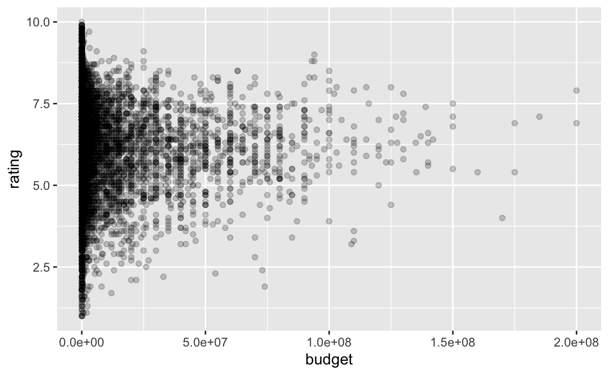
Das ist das gleiche Ergebnis wie darüber.
Nützlich ist auch, wenn man eine Dichtekurve über das Histogramm legt:
movies %>%
ggplot(aes(x = rating)) +
geom_histogram(aes(y = stat(density))) +
geom_density(col = "red")

Das Rating ist relativ normalverteilt. Das ist kaum überraschend, denn das Antwortformat von 1-10 erlaubt kaum Extremwerte und suggeriert damit eine Mitte. Ob damit die echte, psychologische Dimension “wie gut finde ich den Film” (“Gefallen”) gemessen wird, steht auf einem anderen Blatt. Etwas Skepsis ist berechtigt. Wenn aber unsere Operationalisierung von Gefallen supoptimal ist, also verrauscht, so brauchen wir nicht erwarten, dass unsere Vorhersagen spitze sein werden.
Explorative Analyse
Hier sind beispielhaft einige explorativen Analysen dargestellt.
movies %>%
ggplot() +
aes(x = budget, y = rating) +
geom_point(alpha = .2)
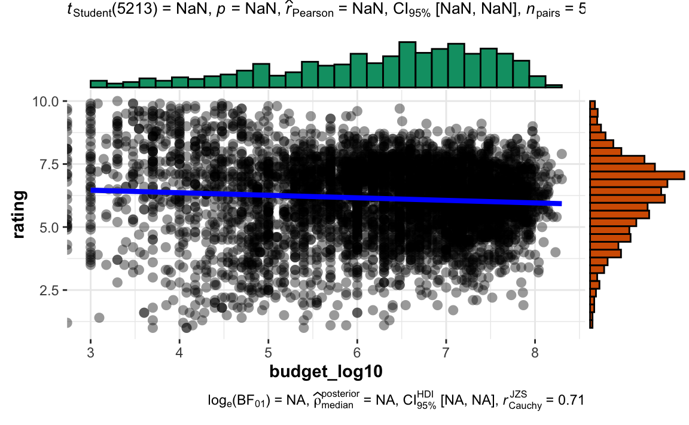
Budget logarithmieren
Man sieht eine deutliche Konzentration im unteren Budget-Bereich. Das spricht für eine Transformation, um den Bereich zu “strecken”.
movies %>%
mutate(budget_log10 = log10(budget)) -> movies2
Dafür entfernen wir jetzt die ursprüngliche Variable budget.
movies2 %>%
select(budget_log10, everything()) %>% # "budget_log10" als erste Spalte
select(-budget) -> movies2
Logarithmiert man die Zahl 0, so kommt -Inf heraus. Das ist keine Zahl und macht daher Problmee. Darum müssen wir uns noch kümmern.
movies2 %>%
filter(!is.nan(budget_log10)) %>%
filter(!is.infinite(budget_log10)) -> movies2a
Betrachten wir das Streudiagramm noch einmal. Bei der Gelegenheit fügen wir einen “rollenden Mittelwert” hinzu (“Smoother”). Und wir ergänzen die univariaten Verteilungen der beiden Variablen.
movies2a %>%
ggplot() +
aes(x = budget_log10, y = rating) +
geom_point(alpha = .2) +
geom_smooth() +
geom_rug()
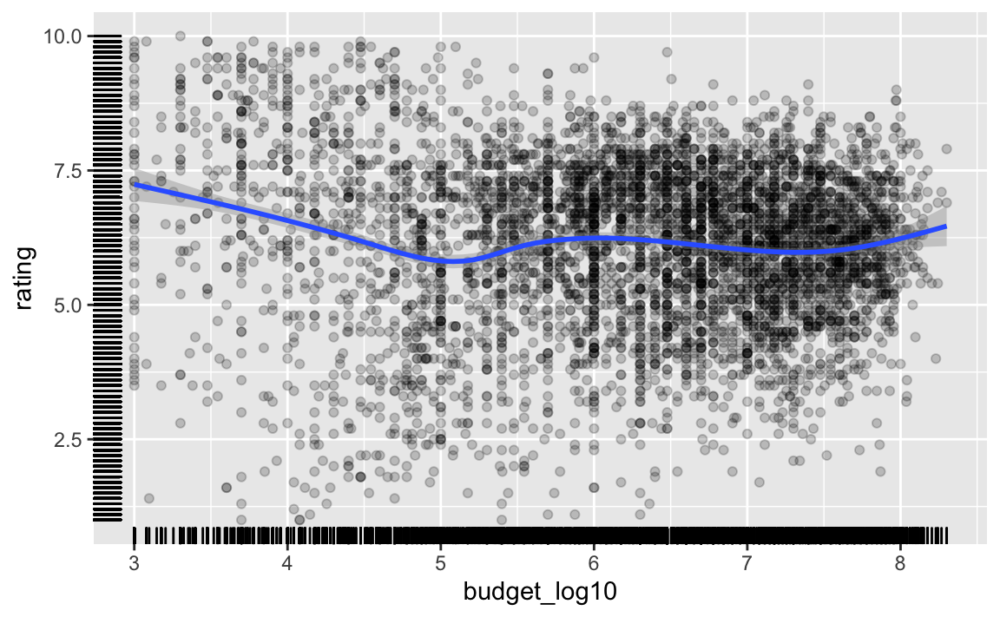
Hier lässt sich vage ein linearer (schwacher) Trend erkennen.
Die univariate Verteilung wird nur schlecht verdeutlicht durch die “Striche” auf den Achsen (geom_rug). Hier müssen wir uns noch etwas Schöneres überlegen.
movies2a %>%
ggscatterstats(x = budget_log10, y = rating)
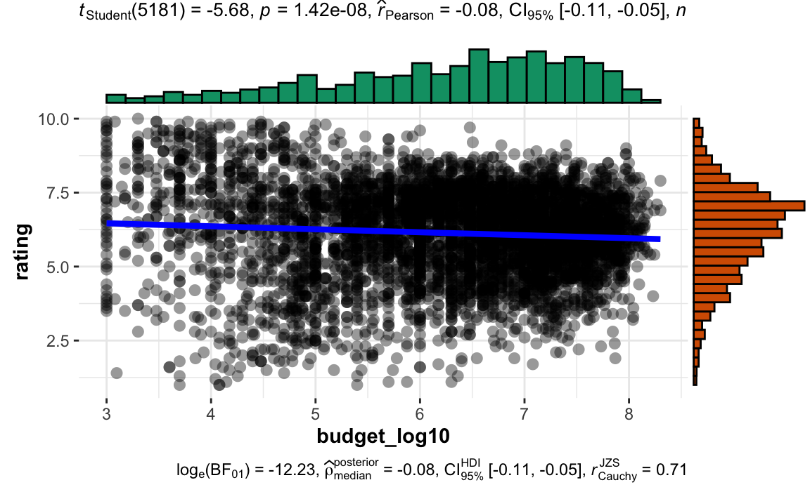
Hier findet sich weitere Erklärung zu diesem Diagramm.
Vielleicht unterscheidet sich dieser Zusammenhang nach dem Genre?
Dazu müssen wir den Datensatz umbauen.
Datensatz umbauen (pivotieren): Moderierender Effekt von Genre
movies2a %>%
select(budget_log10, rating, Action:Short) %>%
pivot_longer(cols = Action:Short, names_to = "genre") -> movies2_long
Anstelle von Punkten stellen wir jetzt den Zusammenhang mit “Fliesen” dar. Je heller die Fliese, desto mehr Punkte finden sich an dieser Stelle.
Den Zusammenhang teilen wir nach Genre auf, denn das ist die Frage, die wir gerade aufgeworfen hatten.
movies2_long %>%
filter(value == 1) %>%
ggplot() +
aes(x = budget_log10, y = rating) +
geom_bin2d() +
facet_wrap(~ genre) +
geom_smooth() +
scale_fill_viridis_c()
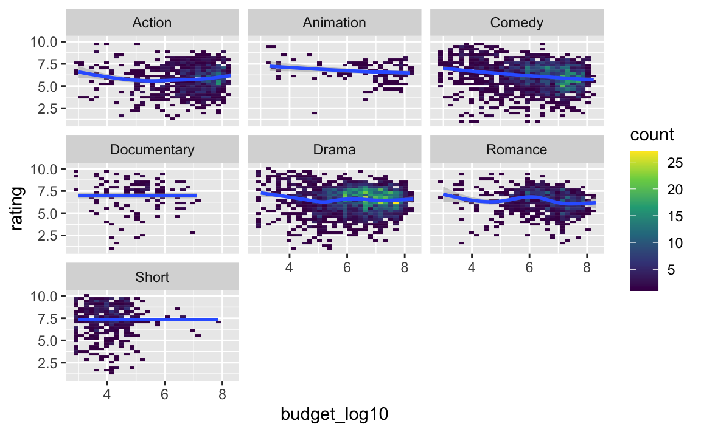
Mit scale_fill_viridis_c() haben wir noch ein schickeres Farbschema ausgewählt.
🏋️ Lassen Sie mal diese Zeile weg und vergleichen Sie das Ergebnis.
👉 Insgesamt scheinen die Zusammenhänge in allen Genres ähnlich zu sein. Das heißt mit anderen Worten, dass wir keine/kaum Evidenz gefunden haben (in dieser Analyse), dass genre den Zusammenhang von Budget und Rating moderieren würde.
Korrelation zwischen den Gruppen
movies2_long %>%
filter(value == 1) %>%
drop_na(budget_log10, rating) %>%
group_by(genre) %>%
summarise(cor_group = cor(budget_log10, rating))
#> # A tibble: 7 x 2
#> genre cor_group
#> <chr> <dbl>
#> 1 Action 0.0304
#> 2 Animation -0.205
#> 3 Comedy -0.202
#> 4 Documentary -0.0507
#> 5 Drama -0.0402
#> 6 Romance -0.161
#> 7 Short 0.00966
Einfluss von Genre
Aber hat das Genre vielleicht einen generellen Effekt auf die Beurteilung? Werden vielleicht Actionfile generell besser bewertet als Kurzfilme?
movies2_long %>%
ggplot() +
aes(x = genre, y = rating) +
geom_boxplot()
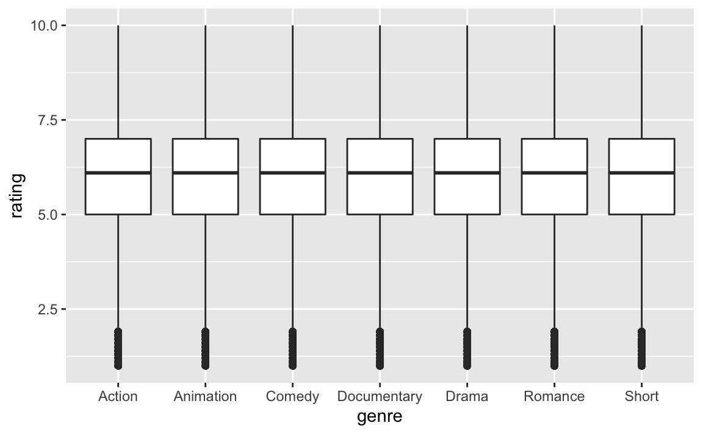
movies2_long %>%
filter(value == 1) %>%
drop_na(rating, genre) %>%
group_by(genre) %>%
summarise(rating_group_md = median(rating))
#> # A tibble: 7 x 2
#> genre rating_group_md
#> <chr> <dbl>
#> 1 Action 5.4
#> 2 Animation 6.7
#> 3 Comedy 6.1
#> 4 Documentary 6.9
#> 5 Drama 6.3
#> 6 Romance 6.3
#> 7 Short 6.6
Da scheint’s keine (starken) statistischen Abhängigkeiten zu geben.
Datensatz vereinfachen
Die Variable zum Titel ist ohne weitere Bearbeitung kaum nützlich (Stichwort “Feature Engineering”); besser wir entfernen sie der Einfachheit halber.
movies2a %>%
select(-title) -> movies2a
Um die Fallstudie einfach zu halten, entfernen wir auch die Bewertungsperzentil-Variablen:
movies2a %>%
select(-c(r1:r10)) -> movies2a
Die Variable mpaa sieht auch komisch aus. Wie viele unterschiedliche (distinkte) Werte gibt es?
movies2a %>%
summarise(n_distinct(mpaa))
#> n_distinct(mpaa)
#> 1 5
Fünf.
Und wie viele fehlende Werte?
movies2a %>%
summarise(sum(is.na(mpaa)))
#> sum(is.na(mpaa))
#> 1 0
Moment, ich habe doch viele leere Zellen gesehen … Vielleicht so:
movies2a %>%
filter(mpaa == "") %>%
nrow() / nrow(movies)
#> [1] 0.9156971
Über 90% fehlende Werte also. Besser wir entfernen diese Variable.
movies2a %>%
select(-mpaa) -> movies2a
Datensatz aufteilen (Train- und Test)
Möchte man eine Vorhersage machen, gehört es zum guten Ton, den Datensatz in einen Train- und einen Test-Teil aufzuteilen. Mit dem Train-Datensatz kann man nach Herzenslust rumbasteln (modellieren); der Test-Datensatz kommt nur einmal zum Schluss zum Einsatz, um die Güte des (besten) Modells zu überprüfen.
Vielen Modelle können keine fehlenden Werte verdauen; daher entfernen wir hier jetzt pauschal alle fehlenden Werte.
movies2a %>%
drop_na() -> movies2_nona # "no NA" soll das heißen
Wie viele Zeilen bleiben uns?
nrow(movies2_nona)
#> [1] 5183
Das ist schon schmerzlich. Ob das eine gute Idee war? Naja, bleiben wir erstmal auf dieser Route.
set.seed(123)
movies2_split <- initial_split(movies2_nona, prop = 0.7)
movies2_train <- analysis(movies2_split)
movies2_test <- assessment(movies2_split)
dim(movies2_train)
#> [1] 3629 13
Zum Vergleich, die Zeilenzahl im gesamten Datensatz:
dim(movies)
#> [1] 58788 25
Gibt es jetzt noch fehlende Werte im Train- oder Test-Datensatz?
is.na(movies2_train) %>% sum()
#> [1] 0
Ok; keine fehlenden Werte mehr.
Modell 0 (“Nullmodell”)
Im Folgenden werden wir einige Modelle aufstellen und diese dann vergleichen. Zu Referenzzwecken erstellen wir zuerst ein “Nullmodell”, das null (keine) Prädiktoren beinhaltet. Mit diesem Modell vergleichen wir dann die folgenden Modelle.
m0 <- lm(rating ~ 1, data = movies2_train)
Wir nehmen lieben nicht die “Langform” (movies3), da dort die Beobachtungseinheit nicht mehr ein Film ist, im Gegensatz zur Tabelle movies2.
Schauen wir uns die Ergebnisse an:
summary(m0)
#>
#> Call:
#> lm(formula = rating ~ 1, data = movies2_train)
#>
#> Residuals:
#> Min 1Q Median 3Q Max
#> -5.1291 -0.9291 0.1709 1.0709 3.8709
#>
#> Coefficients:
#> Estimate Std. Error t value Pr(>|t|)
#> (Intercept) 6.12913 0.02569 238.6 <2e-16 ***
#> ---
#> Signif. codes: 0 '***' 0.001 '**' 0.01 '*' 0.05 '.' 0.1 ' ' 1
#>
#> Residual standard error: 1.548 on 3628 degrees of freedom
Der Output ist nicht “aufgeräumt”; schöner wäre eine Ausgabe in Form eines Dataframes.
Hier die Modellkoeffienten in “tidy” Form; in diesem Fall nur der Achsenabschnitt (Intercept):
tidy(m0)
#> # A tibble: 1 x 5
#> term estimate std.error statistic p.value
#> <chr> <dbl> <dbl> <dbl> <dbl>
#> 1 (Intercept) 6.13 0.0257 239. 0
Und die Modellgüte (“model fit”):
glance(m0)
#> # A tibble: 1 x 12
#> r.squared adj.r.squared sigma statistic p.value df logLik AIC BIC
#> <dbl> <dbl> <dbl> <dbl> <dbl> <dbl> <dbl> <dbl> <dbl>
#> 1 0 0 1.55 NA NA NA -6734. 13472. 13484.
#> # … with 3 more variables: deviance <dbl>, df.residual <int>, nobs <int>
\(R^2\) ist hier per Definition gleich Null.
Die Struktur des lm-Objekts kann man sich so anschauen:
#> List of 11
#> $ coefficients : Named num 6.13
#> ..- attr(*, "names")= chr "(Intercept)"
#> $ residuals : Named num [1:3629] -4.529 -1.329 -2.429 0.571 -0.529 ...
#> ..- attr(*, "names")= chr [1:3629] "2" "3" "4" "5" ...
#> $ effects : Named num [1:3629] -369.226 -1.255 -2.355 0.645 -0.455 ...
#> ..- attr(*, "names")= chr [1:3629] "(Intercept)" "" "" "" ...
#> $ rank : int 1
#> $ fitted.values: Named num [1:3629] 6.13 6.13 6.13 6.13 6.13 ...
#> ..- attr(*, "names")= chr [1:3629] "2" "3" "4" "5" ...
#> $ assign : int 0
#> $ qr :List of 5
#> ..$ qr : num [1:3629, 1] -60.2412 0.0166 0.0166 0.0166 0.0166 ...
#> .. ..- attr(*, "dimnames")=List of 2
#> .. .. ..$ : chr [1:3629] "2" "3" "4" "5" ...
#> .. .. ..$ : chr "(Intercept)"
#> .. ..- attr(*, "assign")= int 0
#> ..$ qraux: num 1.02
#> ..$ pivot: int 1
#> ..$ tol : num 1e-07
#> ..$ rank : int 1
#> ..- attr(*, "class")= chr "qr"
#> $ df.residual : int 3628
#> $ call : language lm(formula = rating ~ 1, data = movies2_train)
#> $ terms :Classes 'terms', 'formula' language rating ~ 1
#> .. ..- attr(*, "variables")= language list(rating)
#> .. ..- attr(*, "factors")= int(0)
#> .. ..- attr(*, "term.labels")= chr(0)
#> .. ..- attr(*, "order")= int(0)
#> .. ..- attr(*, "intercept")= int 1
#> .. ..- attr(*, "response")= int 1
#> .. ..- attr(*, ".Environment")=<environment: R_GlobalEnv>
#> .. ..- attr(*, "predvars")= language list(rating)
#> .. ..- attr(*, "dataClasses")= Named chr "numeric"
#> .. .. ..- attr(*, "names")= chr "rating"
#> $ model :'data.frame': 3629 obs. of 1 variable:
#> ..$ rating: num [1:3629] 1.6 4.8 3.7 6.7 5.6 3.3 7.8 5.8 4.7 8.7 ...
#> ..- attr(*, "terms")=Classes 'terms', 'formula' language rating ~ 1
#> .. .. ..- attr(*, "variables")= language list(rating)
#> .. .. ..- attr(*, "factors")= int(0)
#> .. .. ..- attr(*, "term.labels")= chr(0)
#> .. .. ..- attr(*, "order")= int(0)
#> .. .. ..- attr(*, "intercept")= int 1
#> .. .. ..- attr(*, "response")= int 1
#> .. .. ..- attr(*, ".Environment")=<environment: R_GlobalEnv>
#> .. .. ..- attr(*, "predvars")= language list(rating)
#> .. .. ..- attr(*, "dataClasses")= Named chr "numeric"
#> .. .. .. ..- attr(*, "names")= chr "rating"
#> - attr(*, "class")= chr "lm"
Modell 1: budget_log10
movies2_train %>%
drop_na(budget_log10, rating) %>%
lm(rating ~ budget_log10, data = .) -> m1
Upps, ein Fehler, was ist passiert? Die Fehlermeldung sagt uns, es gäbe unendliche Werte in unseren Daten. Gut, eine brave Maschine weiß dann nicht genau, was sie tun soll …
movies2_train %>%
select(budget_log10, rating) %>%
filter(budget_log10 == -Inf)
#> [1] budget_log10 rating
#> <0 rows> (or 0-length row.names)
Da haben wir die Schuldigen. Eine Log-Transformation von null Budget liefert:
log10(0)
#> [1] -Inf
Genau wie:
log(0)
#> [1] -Inf
Unendliche Werte entfernen
Diese Null-Budgets hätten wir entfernen müssen. Na gut, dann machen wir es jetzt.
movies2_train %>%
filter(budget_log10 != -Inf) -> movies2_train
Evtl. wäre es besser, in einen neuen Datensatz abzuspeichern. Das ist manchmal eine schwierige Frage.
movies2_train %>%
lm(rating ~ budget_log10, data = .) -> m1
Model 1 Ergebnisse
tidy(m1)
#> # A tibble: 2 x 5
#> term estimate std.error statistic p.value
#> <chr> <dbl> <dbl> <dbl> <dbl>
#> 1 (Intercept) 6.76 0.135 50.0 0
#> 2 budget_log10 -0.102 0.0213 -4.77 0.00000190
Die Modellgüte sieht so aus:
glance(m1)
#> # A tibble: 1 x 12
#> r.squared adj.r.squared sigma statistic p.value df logLik AIC BIC
#> <dbl> <dbl> <dbl> <dbl> <dbl> <dbl> <dbl> <dbl> <dbl>
#> 1 0.00624 0.00596 1.54 22.8 1.90e-6 1 -6722. 13451. 13469.
#> # … with 3 more variables: deviance <dbl>, df.residual <int>, nobs <int>
Also peinlich schlecht.
Anzahl der Stimmen (votes)
Vielleicht lässt die Anzahl der abgegebenen Stimmen (votes) einen Rückschluss auf die spätere Beurteilung zu? Nach dem Motto: Wenn viele Leute eine Beurteilung abgeben, dann sind die Gemüter erhitzt und der Film muss spalten. Wobei diese Behauptung eigentlich nichts über den Mittelwert der Beurteilung aussagt, sondern über die Streuung. Aber schauen wir einfach mal.
p1 <- movies2_train %>%
ggplot(aes(x = votes)) +
geom_histogram() +
labs(title = "Datensatz: movies2_train")
p1
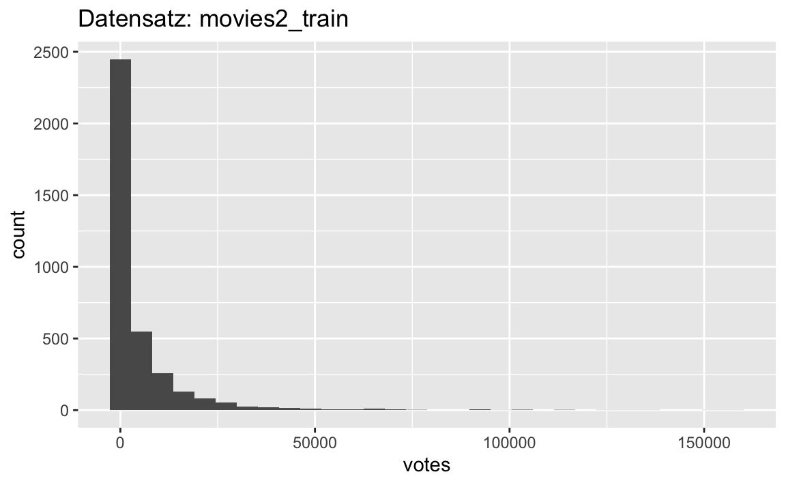
Ein ggplot-Diagramm ist auch nur ein Objekt, wie jedes andere R-Objekt auch. Daher kann man es auch in einer Variablen speichern. Ruft man diese Variable (p1, p wie plot) auf, so wird das Diagramm gezeigt.
Oha! Das ist richtig schön schief.
Vergleichen wir mal, ob es Unterschiede in der Verteilung gibt, in den verschiedenen Varianten des Datensatzes.
p2 <- movies %>%
ggplot(aes(x = votes)) +
geom_histogram() +
labs(title = "Datensatz: movies")
p3 <- movies2_test %>%
ggplot(aes(x = votes)) +
geom_histogram() +
labs(title = "Datensatz: movies2_test")
Möchte man mehrere Plots zusammenfügen, so kann man das so tun:
plot_grid(p1, p2, p3)
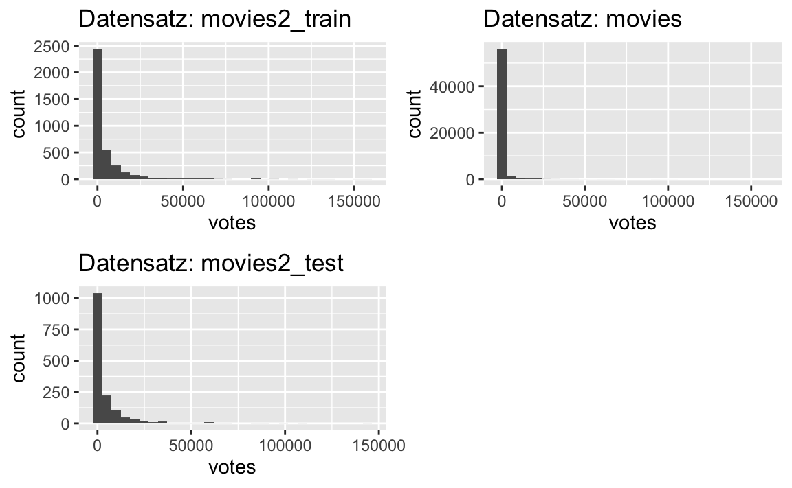
Betrachten wir das Streudiagramm:
movies2_train %>%
ggplot(aes(x = votes, y = rating)) +
geom_point()
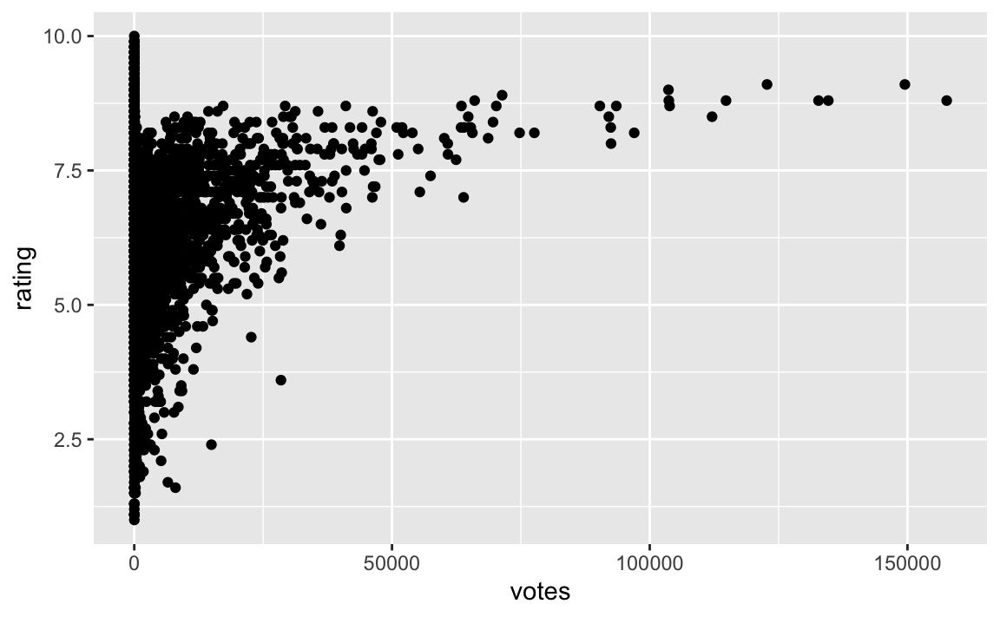
Die Schiefe kann man als Anlass sehen, votes zu logarithmieren.
movies2_train %>%
ggplot(aes(x = log10(votes), y = rating)) +
geom_point(alpha = .4) +
geom_smooth(method = "lm")
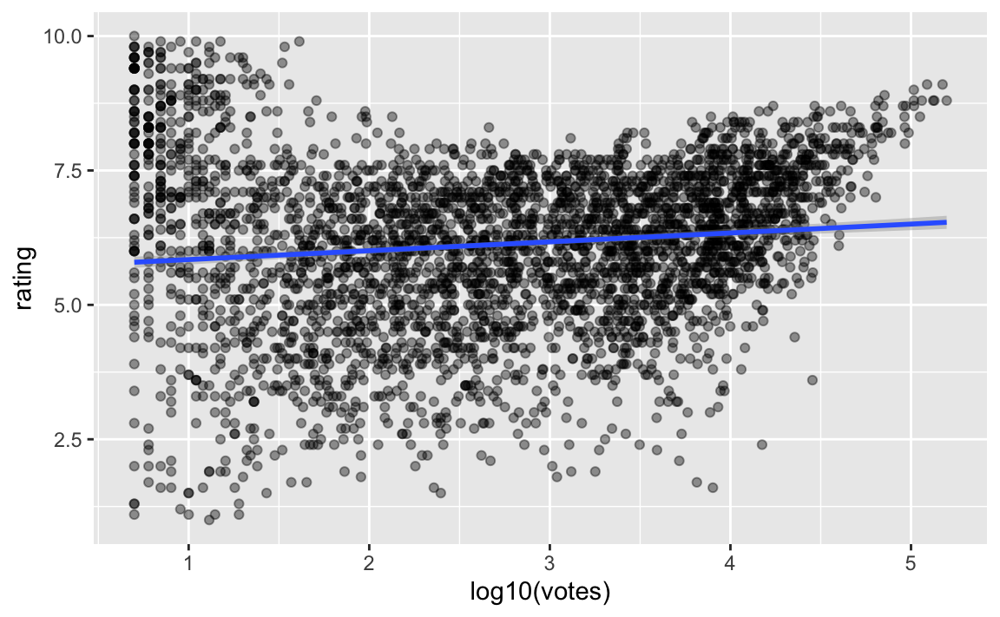
Hier haben wir gleich eine Regressionsgerade in den Punkteschwarm gelegt.
Eine Variante:
movies2_train %>%
ggplot(aes(x = log10(votes), y = rating)) +
geom_point(alpha = .2) +
geom_smooth(method = "lm", color = "red") +
geom_density_2d()
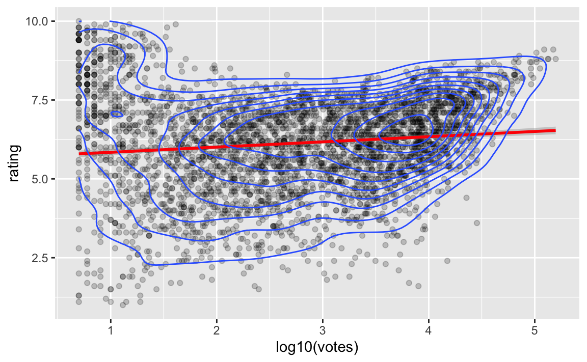
Modell 2: Anzahl der Stimmen, linear
Erstellen wir die logarithmierte Version von votes:
movies2_train %>%
mutate(votes_log10 = log10(votes)) %>%
select(-votes) -> movies2_train
movies2_train %>%
lm(rating ~ votes_log10, data = .) -> m2
m2 %>%
tidy()
#> # A tibble: 2 x 5
#> term estimate std.error statistic p.value
#> <chr> <dbl> <dbl> <dbl> <dbl>
#> 1 (Intercept) 5.68 0.0678 83.7 0.
#> 2 votes_log10 0.165 0.0230 7.19 8.00e-13
glance(m2)
#> # A tibble: 1 x 12
#> r.squared adj.r.squared sigma statistic p.value df logLik AIC BIC
#> <dbl> <dbl> <dbl> <dbl> <dbl> <dbl> <dbl> <dbl> <dbl>
#> 1 0.0140 0.0138 1.54 51.7 8.00e-13 1 -6708. 13422. 13441.
#> # … with 3 more variables: deviance <dbl>, df.residual <int>, nobs <int>
Tja. Unsere Erklärungskraft bleibt bescheiden.
Modell 3: Anzahl der Stimmen als Polynomialmodell, quadratisch
Betrachtet man das Streudiagramm mit den Anzahl der Stimmen, so könnte man auf die Idee kommen, der Zusammenhang sei durch ein Polynomialmodell gut zu beschreiben.
Probieren wir ein quadratisches Modell (also zweiten Grades):
m3 <- lm(rating ~ I(votes_log10^2) + votes_log10, data = movies2_train)
Das I() brauchen wir, weil in der Formel-Schreibweise ein Dach “^” nicht die normale algebraische Bedeutung hat. Mit I wird gesagt, dass die normale algebraische Bedeutung, trotz dem Formelschreibweisenumgebung, gelten soll.
Die Ergebnisse:
tidy(m3)
#> # A tibble: 3 x 5
#> term estimate std.error statistic p.value
#> <chr> <dbl> <dbl> <dbl> <dbl>
#> 1 (Intercept) 8.31 0.133 62.4 0.
#> 2 I(votes_log10^2) 0.455 0.0202 22.5 3.47e-105
#> 3 votes_log10 -2.25 0.109 -20.6 5.49e- 89
glance(m3)
#> # A tibble: 1 x 12
#> r.squared adj.r.squared sigma statistic p.value df logLik AIC BIC
#> <dbl> <dbl> <dbl> <dbl> <dbl> <dbl> <dbl> <dbl> <dbl>
#> 1 0.135 0.135 1.44 283. 6.75e-115 2 -6471. 12949. 12974.
#> # … with 3 more variables: deviance <dbl>, df.residual <int>, nobs <int>
Schon etwas besser.
Schauen wir uns das Polynom 2. Grades einmal an:
movies2_train %>%
ggplot(aes(x = votes_log10, y = rating)) +
geom_point(alpha = .2) +
geom_smooth(method = "lm", se = FALSE,
formula = y ~ poly(x, 2))
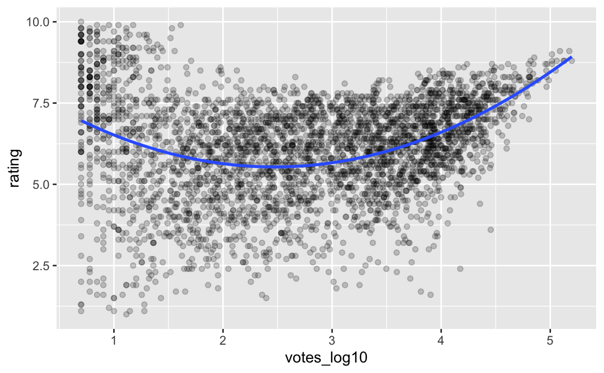
Modell 4: Anzahl der Stimmen als Polynomialmodell, 3. Grades
Vielleicht ein Polynom 3. Grades?
movies2_train %>%
ggplot(aes(x = votes_log10, y = rating)) +
geom_point(alpha = .2) +
geom_smooth(method = "lm", se = FALSE,
formula = y ~ poly(x, 3))
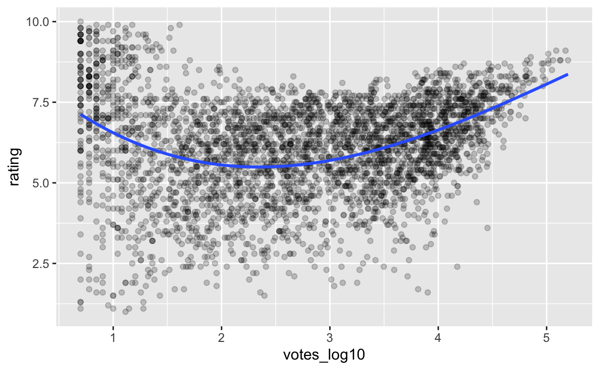
Sieht nicht viel besser aus. Da ist einfach viel Rauschen in den Daten, scheint’s.
m4 <- lm(rating ~ poly(votes_log10, degree = 3),
data = movies2_train)
Anstelle die Prädiktoren mit I() kann man auch – einfacher – mit poly() das Polynom vom Grad degree bestimmen.
Die Ergebnisse:
tidy(m4)
#> # A tibble: 4 x 5
#> term estimate std.error statistic p.value
#> <chr> <dbl> <dbl> <dbl> <dbl>
#> 1 (Intercept) 6.13 0.0239 257. 0.
#> 2 poly(votes_log10, degree = 3)1 11.0 1.44 7.68 2.02e- 14
#> 3 poly(votes_log10, degree = 3)2 32.4 1.44 22.5 2.08e-105
#> 4 poly(votes_log10, degree = 3)3 -4.41 1.44 -3.07 2.16e- 3
glance(m4)
#> # A tibble: 1 x 12
#> r.squared adj.r.squared sigma statistic p.value df logLik AIC BIC
#> <dbl> <dbl> <dbl> <dbl> <dbl> <dbl> <dbl> <dbl> <dbl>
#> 1 0.137 0.137 1.44 192. 1.17e-115 3 -6466. 12942. 12973.
#> # … with 3 more variables: deviance <dbl>, df.residual <int>, nobs <int>
Es scheint keinen Unterschied zu machen, ob man ein Polynom 2. oder 3. Grades in die Daten anpasst.
Korrelationsmatrix (visualisieren)
Vielleicht kann (nur) eine Kombination mehrerer Prädiktoren zu einer genauen Vorhersage führen? Probieren wir es aus.
Zuerst betrachten wir die bivariaten Korrelation.
movies_corr <- correlate(movies2_train) %>%
rearrange() %>% # der Größe nach ordnen
mutate_if(is.numeric, ~ifelse(abs(.) > 0.2, ., NA)) %>%
shave() # redundantes Dreieck abrasieren
fashion(movies_corr)
#> rowname budget_log10 length votes_log10 Action Drama Romance Comedy X
#> 1 budget_log10
#> 2 length .63
#> 3 votes_log10 .77 .54
#> 4 Action .24 .22
#> 5 Drama .27
#> 6 Romance
#> 7 Comedy -.25
#> 8 X
#> 9 year
#> 10 Animation
#> 11 rating .22
#> 12 Documentary
#> 13 Short -.53 -.68 -.42
#> year Animation rating Documentary Short
#> 1
#> 2
#> 3
#> 4
#> 5
#> 6
#> 7
#> 8
#> 9
#> 10
#> 11
#> 12
#> 13 .23
Diese Zeile mutate_if(is.numeric, ~ifelse(abs(.) > 0.2, ., NA)) heißt grob übersetzt:
Verändere eine Spalte, wenn (if) sie numerisch ist. Und zwar folgendermaßen: wenn der Absolutwert in einer Zelle größer ist als 0.2, dann übernehme ihn, wie er ist (.), ansonsten ersetze durch NA.
Scheuen wir uns nur die Korrelationen mit rating näher an:
movies_corr %>%
select(rowname, rating)
#> # A tibble: 13 x 2
#> rowname rating
#> <chr> <dbl>
#> 1 budget_log10 NA
#> 2 length NA
#> 3 votes_log10 NA
#> 4 Action NA
#> 5 Drama NA
#> 6 Romance NA
#> 7 Comedy NA
#> 8 X NA
#> 9 year NA
#> 10 Animation NA
#> 11 rating NA
#> 12 Documentary NA
#> 13 Short 0.233
Tja, aus den bivariaten Korrelationen ist nicht viel rauszuholen. Bleibt als Hoffnung:
- nicht lineare Zusammenhänge
- Interaktionen, so dass nur mehrere Variablen gleichzeitig mit der Zielvariablen korrelieren
- dass “Kleinvieh-macht-auch-Mist-Prinzip”: Vielleicht läppert sich ein bisschen Korrelation pro Prädiktor zu einer ansehnlichen Gesamtvorhersagekraft.
Visualisieren wir noch die Korrelationsmatrix:
rplot(movies_corr)
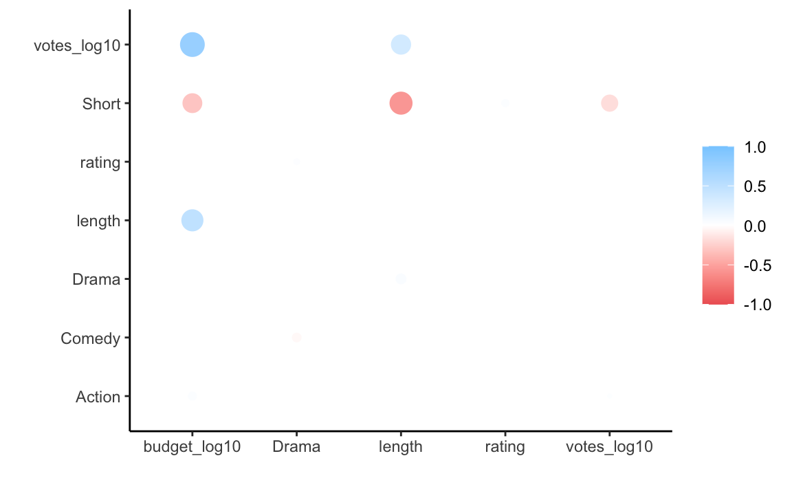
Modell 5: Multiple Regression
Untersuchen wir ein Modell, das mehrere Prädiktoren vereint.
m5 <- lm(rating ~ votes_log10 + budget_log10, data = movies2_train)
glance(m5)
#> # A tibble: 1 x 12
#> r.squared adj.r.squared sigma statistic p.value df logLik AIC BIC
#> <dbl> <dbl> <dbl> <dbl> <dbl> <dbl> <dbl> <dbl> <dbl>
#> 1 0.0845 0.0840 1.48 167. 2.84e-70 2 -6574. 13155. 13180.
#> # … with 3 more variables: deviance <dbl>, df.residual <int>, nobs <int>
3D-Visualisierung
Verändern wir die Reihenfolge der Spalten, so dass die “wichtigen” Spalten vorne stehen:
movies2_train %>%
select(rating, votes_log10, budget_log10, everything()) -> movies2_train
In diesem Modell sind 3 Variablen involviert. Eine Visualisierung ist hier schon schwierig. Hier finden sich dazu einige Anregungen.
Das könnte eine Möglichkeit sein:
rsm::contour.lm(m5, votes_log10 ~ budget_log10, image = TRUE)
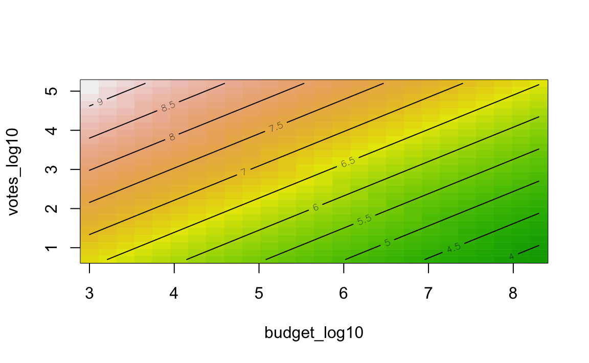
Die Farbe gibt die “Höhe” des Wertes in der Output-Variablen wider.
Modell 6: Interaktionsmodell
m6 <- lm(rating ~ votes_log10 + budget_log10 + votes_log10:budget_log10,
data = movies2_train)
glance(m6)
#> # A tibble: 1 x 12
#> r.squared adj.r.squared sigma statistic p.value df logLik AIC BIC
#> <dbl> <dbl> <dbl> <dbl> <dbl> <dbl> <dbl> <dbl> <dbl>
#> 1 0.116 0.116 1.46 159. 8.53e-97 3 -6510. 13029. 13060.
#> # … with 3 more variables: deviance <dbl>, df.residual <int>, nobs <int>
Rohe Kraft: Schrittweise Regression
Wir könnten jetzt sagen, wir geben es auf, nach einzelnen netten Prädiktoren zu suchen. Schön wäre natürlich, wir hätten eine Theorie, die uns (kausal) sagt, welche Prädiktoren eine Rolle spielten. In Ermangelung derselben können wir auch rein datengetrieben vorgehen.
Einfach gesprochen sagen wir zu R: “Berechne ein Modell mit einem Prädiktor; dabei probiere aus, welcher Prädiktor zum besten Modell führt. Dann wiederhole das mit 2 Prädiktoren und so weiter bis du zu einem Modell kommst, das alle Prädiktoren beinhaltet. Wenn aber irgendwann die Hinzunahme von einem Prädiktor nicht zu einem besseren Modell führt, dann brich ab.”
Wir brauchen ein Nullmodell, das haben wir oben schon definiert (m0). Hier noch mal:
m0 <- lm(rating ~ 1,
data = movies2_train)
Und wir brauchen ein “Vollmodell” (m_all), das alle Prädiktoren beinhaltet.
m_all <- lm(rating ~ .,
data = movies2_train) # kann etwas Zeit brauchen
Dieses Vorgehen nennt man auch schrittweise (Vorwärts-)Regression.
forward <- step(object = m0,
direction = 'forward',
scope = formula(m_all),
trace = 0) # keine Zwischenschritte zeigen
Vorsicht! Bei nominalen Variablen mit vielen unterschiedlichen Werten kann diese Berechnung lange dauern.
tidy(forward)
#> # A tibble: 11 x 5
#> term estimate std.error statistic p.value
#> <chr> <dbl> <dbl> <dbl> <dbl>
#> 1 (Intercept) 19.5 2.13 9.16 8.84e- 20
#> 2 Drama 0.659 0.0486 13.5 7.74e- 41
#> 3 Short 2.65 0.117 22.7 9.05e-107
#> 4 votes_log10 0.571 0.0316 18.1 5.49e- 70
#> 5 budget_log10 -0.404 0.0330 -12.2 9.98e- 34
#> 6 length 0.0142 0.00109 13.1 4.01e- 38
#> 7 Documentary 1.41 0.144 9.76 3.16e- 22
#> 8 year -0.00723 0.00109 -6.61 4.40e- 11
#> 9 Animation 0.891 0.144 6.20 6.32e- 10
#> 10 Comedy 0.205 0.0499 4.10 4.16e- 5
#> 11 Action -0.250 0.0632 -3.95 7.86e- 5
Modellselektion (Modellwahl) – anova
Es gibt verschiedene Methoden, um ein hoffenltich bestes Modell auszuwählen.
anova(m0, m2, m3, m4)
#> Analysis of Variance Table
#>
#> Model 1: rating ~ 1
#> Model 2: rating ~ votes_log10
#> Model 3: rating ~ I(votes_log10^2) + votes_log10
#> Model 4: rating ~ poly(votes_log10, degree = 3)
#> Res.Df RSS Df Sum of Sq F Pr(>F)
#> 1 3628 8690.1
#> 2 3627 8568.1 1 122.02 58.9963 2.019e-14 ***
#> 3 3626 7517.1 1 1050.96 508.1222 < 2.2e-16 ***
#> 4 3625 7497.6 1 19.48 9.4178 0.002165 **
#> ---
#> Signif. codes: 0 '***' 0.001 '**' 0.01 '*' 0.05 '.' 0.1 ' ' 1
Eine Varianzanalyse (anova) besteht im Kern aus einem \(F\)-Test. Der F-Test ist so definiert:
\[F =\frac{(TSS-RSS)/p}{RSS/(n-p-1)}\]
Dabei ist TSS die Gesamtstreuung, RSS die Streuung der Residuen; \(n\) die Anzahl der Beobachtungen und \(p\) die Anzahl der Prädiktoren; s. Witten et al. (2013), S. 75 (eq. 3.23).
Man kann diese Formel verwenden, um die Residualstreuung eines einfacheren Modells (\(RSS_0\)) im Vergleich zu einem “verschachtelteren” (komplexeren) Modells (\(RSS\)) zu vergleichen:
\[F =\frac{(RSS_0-RSS)/p}{RSS/(n-p-1)}\]
- Witten et al. (2013), S. 77 (eq. 3.24).
Genau das wird mit anova() angezeigt.
m1 und m2 sind nicht ineinander verschachtelt; m2 ist genau komplex wie m1; daher wird hier kein Test durchgeführt bzw. würden keine Koeffizienten von anova() ausgegeben.
Modellselektion (Modellwahl) – Prädiktion
modellist <- list(m0, m1, m2, m3, m4, m5, m6, forward)
model_preds <- modellist %>%
map( ~ predict(., movies2_test))
#> Error in eval(predvars, data, env): object 'votes_log10' not found
Mit map() wird die angegebene Funktion – predict() auf jedes Element von modellist “gemapt”, zugeordnet oder angewendet also.
Oh, uns fehlen noch die Transformationen im Test-Sample…
movies2_test %>%
mutate(votes_log10 = log10(votes)) -> movies2_test
Noch einmal:
model_preds <- modellist %>%
map_dfc( ~ predict(., movies2_test))
Schauen wir uns das Ergebnisobjekt an:
glimpse(model_preds)
#> Rows: 1,554
#> Columns: 8
#> $ ...1 <dbl> 6.129126, 6.129126, 6.129126, 6.129126, 6.129126, 6.129126, 6.12…
#> $ ...2 <dbl> 6.187523, 6.073134, 6.169356, 6.048421, 6.111796, 6.060430, 6.30…
#> $ ...3 <dbl> 6.081709, 6.136675, 6.094947, 6.471870, 6.036239, 6.400996, 5.84…
#> $ ...4 <dbl> 5.534575, 5.578970, 5.536031, 8.036498, 5.574213, 7.203630, 6.46…
#> $ ...5 <dbl> 5.496253, 5.583751, 5.507758, 7.774495, 5.506276, 7.147679, 6.48…
#> $ ...6 <dbl> 6.260875, 5.862958, 6.214307, 6.969459, 5.695536, 6.771119, 6.01…
#> $ ...7 <dbl> 6.012223, 5.700661, 5.964791, 7.127462, 5.483696, 6.810705, 6.30…
#> $ ...8 <dbl> 6.460080, 6.050981, 5.904500, 7.369122, 5.199202, 6.314314, 6.72…
Eine Tabelle mit 8 Spalten Jede dieser 8 Spalten sind die Vorhersagen für eines der Modelle. Wie gut wohl jeweils die Vorhersagen sind?
Geben wir zuerst schönere Namen an die Spalten:
col_names <- paste0("model", 1:8)
names(model_preds) <- col_names
Fügen wir zunächst die wahren Beurteilungswerte zur Tabelle mit den Vorhersagen hinzu:
model_preds %>%
bind_cols(select(movies2_test, rating)) -> model_preds
metrics(model_preds, truth = rating, estimate = model2)
#> # A tibble: 3 x 3
#> .metric .estimator .estimate
#> <chr> <chr> <dbl>
#> 1 rmse standard 1.53
#> 2 rsq standard 0.00610
#> 3 mae standard 1.22
metrics(model_preds, truth = rating, estimate = model3)
#> # A tibble: 3 x 3
#> .metric .estimator .estimate
#> <chr> <chr> <dbl>
#> 1 rmse standard 1.52
#> 2 rsq standard 0.0176
#> 3 mae standard 1.20
Hm
Wie kommt man jetzt elegant zu dem Modell mit den besten Modellkoeffizienten? Jemand eine gute Idee?
Vielleicht so: Vergleich der Modellgüten
Hier ist eine Funktion, die die Modellgüten berechnet:
get_rmse <- function(est) {
rmse <- sqrt(mean((model_preds$rating - est)^2))
}
Die Funktion fässt einen Vektor zu einem Skalar zusammen, kann also gut mit summarise() verwendet werden.
Wir wenden die Funktion über alle Spalten hinweg (across everything) an:
model_preds %>%
summarise(across(everything(), get_rmse)) -> model_rmse
knitr::kable(model_rmse)
| 1.534907 |
1.530248 |
1.521506 |
1.433102 |
1.426455 |
1.46002 |
1.439986 |
1.299784 |
0 |
model_rmse %>%
pivot_longer(cols = everything(),
names_to = "model",
values_to = "rmse") %>%
filter(model != "rating") %>%
ggplot() +
aes(x = reorder(model, -rmse), y = rmse) +
geom_point()
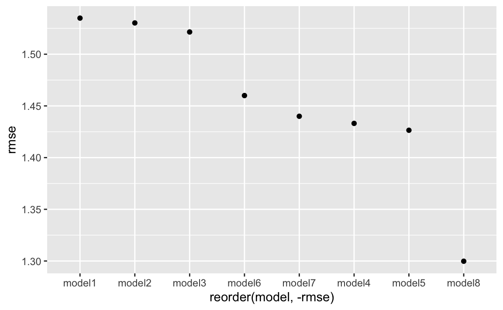
Prüfung der Voraussetzungen
ggplot2::autoplot(forward) + theme_minimal()
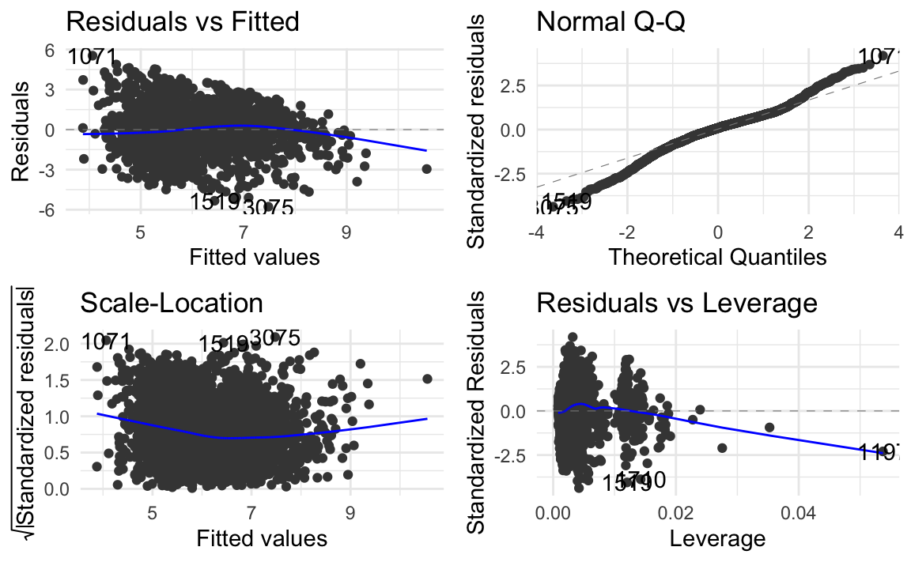